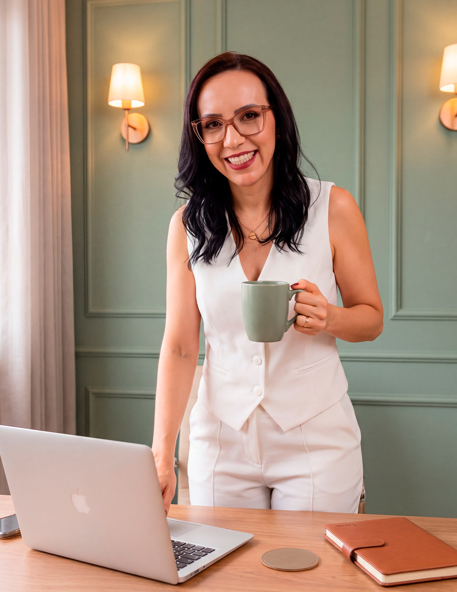

Tissiana Ramos
Nutricionista · CRN 2669
Nutrição gastrointestinal e Personal Diet. Há mais de 20 anos construindo estratégias alimentares que cabem na rotina real.

Nutricionista · CRN 2669
Nutrição gastrointestinal e Personal Diet. Há mais de 20 anos construindo estratégias alimentares que cabem na rotina real.